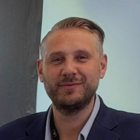

7 October 2026

sustain itself if the chain broke
Unlike most show-floor panels, the second half handed the microphone back to the companies in the room. That is where most of what was worth writing down actually surfaced — including one principal putting the cost of requalifying a legacy part in the millions, and another describing the case for distributed manufacturing more plainly than any brochure has managed.
“What would happen if Australia was completely cut off from all supply chains from overseas, tomorrow? How long would we as a nation survive?”
Richard Elving · Vice President & Managing Director, Asia Pacific, Markforged
What the session was about
Not a product launch, but an industry problem laid out in front of twenty company principals
The organisers split the agenda into four slots — defence, AUKUS and sovereign capability; strengthening Australia’s sovereign defence industrial base; building and scaling a resilient defence supply chain; and secure, distributed manufacturing — followed by an open executive roundtable.
The stated reason for running it was blunt: geopolitical uncertainty, shifting security requirements and mounting pressure on global supply chains are driving the need for stronger, more resilient sovereign manufacturing capability. Attendees would hear industry perspectives first, then join a facilitated discussion on barriers, opportunities and next steps.
Speakers included Michael Sharpe, President and CEO of the AUKUS Forum; Lianne Kelly, Head of Sales for Additive Manufacturing at Invenio; Richard Elving, Vice President and Managing Director for Asia Pacific at Markforged; and two speakers with long records in Australian industry policy and value-chain advisory. Partner and supporting organisations included Land Forces, the AUKUS Forum, the Australian Industry Group, AMTIL and AIDN.

The first proposition
Swap supply chain for value chain, and the question becomes where you sit in it
The first speaker opened by substituting one word for another: stop saying supply chain, say value chain, then work out where you sit in it. His argument was that Australia’s real competitive advantage lies in design and intellectual property rather than in making the thing — manufacturing, in the sense of packaging and producing, is essentially a commodity, and someone in the world will always make it more cheaply.
He hung that judgement on the advanced manufacturing smiley curve: value concentrates at the two ends — pre-production research, design, IP and brand; and post-production distribution, proximity to the end user, after-sales and monetisation — while production itself is the thinnest part. He described it as one of the most powerful strategic frameworks available for working out where a company sits in the defence value chain.
His illustrations were concrete. A Queensland company developed a better welding method; the European prime took it back to its own production facilities. For Australia that is effectively a royalty, even if it never appears as one on the books. Another was metal detection technology, originally built for resources exploration, carried across into military drones. His conclusion: the question is not whether you can make it, but what in your value chain you can iterate.
The time scale of defence procurement
Twenty-six years between the requirement and the build
On the lumpiness and long cycles of defence work, the speaker reached for an example every Australian knows: the Henderson landing craft. The Army first asked for them around the year 2000, when Australia went into Timor. Twenty-six years later they are being built — eight heavy and nine light. By contrast, the Okinawa campaign used two and a half thousand landing craft. He called the gap a mismatch between the politics of defence and the reality.
His ask of industry policy was equally direct: companies do not want grants, they want order numbers — and regular ones. He credited the current defence industry minister with understanding the need for reliable value chains and steady programmes, and with accepting that Australia has lacked scale since it lost the car industry.
A second idea he returned to was complementarity — and he was careful to distinguish it from collusion or anti-competitive behaviour. It is about finding complementary positions and forming a collective value chain. His counter-example came from mining: a machine comes up for refurbishment at a known running-hours mark, and the day it goes back on site everyone knows where that work will be done, yet upstream and downstream will not plan together. People stand around and productivity is lost.
Markforged’s argument
Ask the question nobody wants to answer, then talk about the technology
Richard Elving, Vice President and Managing Director for Asia Pacific at Markforged, took the floor next. He did not start with a product; he started with a hypothetical. If Australia were completely cut off from all overseas supply chains tomorrow, how long could the nation sustain itself? What capability already exists? What are the steps towards sovereignty? Additive manufacturing, he said, is a part of that answer — not the whole of it.
His description of the old model: mass-produce where it is cheapest, hold large inventories, ship it back to Australia. The model worked, and many businesses benefited from it. Its premise is that the chain does not break. Drawing on a regional brief that takes him regularly to China, India, Japan and Australia’s east coast, he observed that every nation is now accelerating its sovereign capability build — and that Australia, in his assessment, has been slower off the mark.
He placed automation and the labour problem inside the same frame. The factories he sees in Korea run with almost no one on the floor. An Australian machine shop exhibiting at the show cannot find machinists; the owner and his son sit in the control room while robots handle loading, machining, welding and inspection. In that company’s view it is the only way to compete against other countries given labour shortages and skills gaps.

The position: sustainment, not replacement
“The defence force looks at additive manufacturing as a life insurance”
Richard Elving was measured about where additive sits in defence: you cannot print a submarine, you cannot print the whole platform, but the technology holds up in sustainment — producing critical components or temporary replacement parts. That, he said, is where it genuinely belongs today. He was equally clear that Markforged’s day-to-day work is tools, jigs, fixtures, replacement parts and low-volume parts inside factories.
He compressed the difference between the old and new models into one line: move away from moving parts to moving data. Design a component in one place, send the data to a machine anywhere in the world, and make it at the point of need using industrial technology and industrial materials. He did not oversell the scope — for the companies in the room, he put it at perhaps one to five per cent of what they make.
What is already running
From the front line to the sea floor to orbit
Hundreds of machines have been deployed to the front line in Ukraine. As an American company, Markforged works closely with the US Army and Navy; when a component is needed at the front, it can be designed in Perth or Boston, sent the same day, and made there the same day.
With the Australian Army, Markforged has containerised its equipment together with 3D scanners and developed a field-deployed configuration that can, in theory, be airdropped from a helicopter into a battle zone. Richard Elving quoted Commander Baldoni of the Australian Army on the rationale: shortening the supply chain and reducing the material that has to cross vulnerable lines of communication gives commanders greater certainty of achieving the mission.
At sea, Markforged has taken part in trials with the US Navy, the Australian Navy and several friendly nations since 2021. The method is to equip the vessel with a machine and a USB drive, and to help the crew reverse-engineer and 3D-scan components that are essential on the submarine — including non-essential parts such as door hinges, as a way of testing before it gets critical. Around one hundred components have now been produced at sea.
On drones, he cited the Ukrainian position that around eighty per cent of casualties are now drone-related. Ukraine recently declined some donated equipment, saying what it needed was not tanks or helicopters but the capability to make drones; the country produced over ten million drones this year. The value of additive here is direct, he said: when the payload, the weapons or the explosives change, the change can be worked in very quickly. In space, 3D-printed satellite components have now been in orbit for over a year.
The roundtable: from those already using it
A 2.4-metre wingspan flight vehicle, from sketch to two prototypes in nine months
The first to speak was Andy Oliver, Managing Director of Neomech, an advanced digital engineering firm in Adelaide. Founded in 2024 with a background spanning motorsport and defence engineering, the company does design, structural analysis, computational fluid dynamics and aerodynamics; roughly ninety-five per cent of its work is defence-focused. It recently invested in both an FX10 and an FX20.
The programme he described was delivered directly for the Royal Australian Air Force under its Plan Jericho disruptive technologies initiative: a flight vehicle with a 2.4-metre wingspan, every part produced using the additive technology the firm had brought in — from a five-napkin sketch to two prototypes in nine months. To deliver it, he and his business partner had to recruit quickly, take a new facility and invest in the machines. He called it a significant investment, and said that so far it has paid dividends.
Also in the room was a Newcastle-based electrification business, which had released a diesel-electric hybrid logistics vehicle the previous day: chassis manufactured by a partner, an existing drivetrain, with the batteries and control system built in-house — concept to manufacture to Land Forces in six months. They also showed a battery designed to jerrycan dimensions, on the reasoning that every military vehicle already carries a jerrycan holder. It holds 2.5 kilowatt-hours and can recharge equipment or run from solar.
The barrier that actually stops it
Not whether it can be made, but the cost of requalifying a legacy part — and the mindset around sign-off
The sharpest challenge of the morning came from one participant, in two parts. A new part going through additive is straightforward: development, certification, tick the boxes. But what about an existing part that has been in service for years and is well proven, and that you now want to print? The material is different and the process is different — it is printed, not machined. Who carries the cost of requalifying the part, the system, the solution? Some of the verification work his organisation has done, he said, runs into the millions.
The second part was the real obstacle. You can put a thorough technical case in front of people, he said, explaining why the printed part is as good as the one that has been machined for twenty years — and the answer comes back: yes, but we have always signed it off that way, and unless you run that very expensive test, I will not accept it. He called it a mindset problem rather than a technical one.
Two workable responses came out of the same discussion. The first, from Neomech: a defence client had a part originally made subtractively, where the critical performance metric was payload mass. Once they could show that changing the material would increase payload by twenty to thirty per cent, the cost of doing the full design-for-additive work became justifiable for the customer. The second was a method — print tensile coupons alongside the parts and send them to an independent testing house for objective quality evidence. He added one caveat: there is no substitute for field testing.
The facilitator closed the thread on a simple test: any business decision has to be qualified. If a navy sees benefit in having a machine on board, there must be economic sense to it — and military sense to it.

The requirement, stated plainly
Thirty-year-old vehicles across Alaska, Indonesia and South America — how do you supply the parts?
Another participant had, about a year earlier, acquired an Australian vehicle brand. The product is an all-terrain platform whose core capability is moving high payloads on a small wheelbase into extreme environments. He described it as technically mature but not scalable — every unit a custom build — and said his approach has been to restructure the whole business into an intellectual property business, leveraging outside manufacturing infrastructure rather than holding capacity in-house.
He then set out the requirement more plainly than any brochure has: they have thirty-year-old vehicles still working in Alaska, and others in Indonesia and South America. Supplying parts to them — or even attempting to — is not commercially sustainable. But take their designs into what he called Industry 4.0, and link those designs to a machine four hours’ drive away, and for a business like his, and for the community that uses his product, that becomes a very large enabler.
Markforged set out the corresponding direction in the room: the company is building a distributed manufacturing platform, closer in concept to a streaming service — the designer retains the intellectual property, and when a part is needed somewhere, available machines near the point of need can be found and the part produced locally. The machines have scanning built in, so the part is scanned after printing and checked as-built against the design. Every device is connected over IoT and files can be sent over the network, while the receiving party can only make the part and cannot take the design itself.

Where the hosts stood
“We are not here just to sell printers”
Invenio’s emphasis in the roundtable was not product but patience. The company’s head of additive manufacturing sales described a three-year piece of qualification work that the industry had broadly doubted, and which was completed only by finding a company willing to go the whole way with them — covering the material, how the part is printed, and the repeatability that ensures a part printed today and the same part printed years later deliver the same result. She offered it as an illustration of how the hosts engage with the market.
Michael Sharpe, President and CEO of the AUKUS Forum, facilitated the roundtable. He opened with a story from just before the pandemic: a government department rang to ask whether Australia had any companies making face masks. He went out to the industry network, found one, the Army sent ten engineers to help it scale, and Australia was mass-producing masks. The point, he said, is not the story but what it proves — when this country needs to scale manufacturing, it can.
He also flagged a gap that is easy to miss: research suggests around thirty per cent of Australian manufacturers do not have a website. His example was a maker of ute trays and campers whose social account — set up by a director’s daughter — was spotted by a car dealer in Saudi Arabia, and which now exports there. Telling your own story, in his view, is an underrated capability in this industry.
What the morning left behind
Three tests you can take away and use
First, position before you invest. Which part of the value chain is yours determines whether capacity is where your money belongs. For most Australian companies the answer leans towards design, intellectual property and services close to the end user, rather than scaling production.
Second, enter through sustainment rather than replacement. Additive’s place in defence is critical components and temporary replacements, not whole platforms. Treating it as a way to shorten the supply chain and reduce dependence on vulnerable lines of resupply is closer to the current reality than treating it as a production method.
Third, do the business arithmetic before the technical argument. The most concrete barrier in the room was not material performance but the cost of requalifying a legacy part, and the mindset at sign-off. What gets past it is shifting the case from equivalent strength to what the change buys you — payload, for instance — supported by objective evidence from independent testing.
The hosts closed by inviting attendees to continue the conversation at the stand on the show floor. For Markforged, the real output of the breakfast was not an order taken that day, but twenty companies around one table saying out loud where each of them is stuck.
Want to know whether your parts are a fit?
The approach Markforged set out at the event is to send an engineer to site: walk the line, find the one part — or the hundred — that can be made more cheaply and more quickly, and help build the return on investment. For enquiries in Greater China and Vietnam, get in touch here.
Contact usAbout the event
- Title: Defence Manufacturing Executive Roundtable | Mission-Ready: Building Sovereign Defence Manufacturing Resilience Through Additive Manufacturing
- Date and location: the morning of 7 October 2026, Perth, Australia; an invitation-only session held alongside Land Forces 2026
- Hosts: co-hosted by Invenio 3D and Markforged
- Partners and supporting organisations: Land Forces, the AUKUS Forum, the Australian Industry Group, AMTIL, AIDN
- This report is compiled from the proceedings. Attending companies are not named, and commercial information that has not been made public is withheld, in line with their preference.
Back to home · markforged.tw